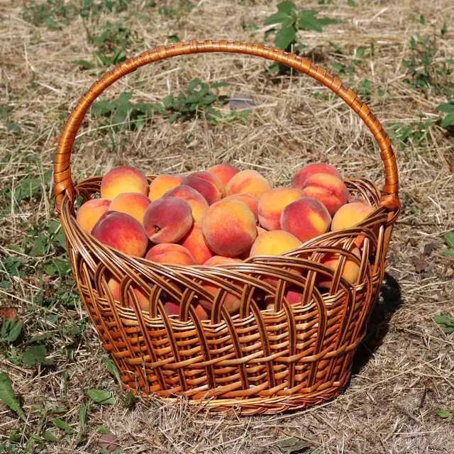

What I do is help you have more time to enjoy the things you enjoy in life, and not deal with tech.
Websites that make you money.
A website that keeps earning for you, day and night, so you have more time for the life you love. Leave the tech to me.
Good-looking websites that let customers call, book or pay you in one tap. We go at your pace. I set it up and show you how. No tech headaches. Local to Middle Tennessee.
New websitesRedesignsOnline paymentsBookingSign designLogosMonthly website carePhone answering helperShow up on GoogleNew websitesRedesignsOnline paymentsBookingSign designLogosMonthly website carePhone answering helperShow up on Google
The Volunteer way: neighbors showing up for neighbors
Let's get our whole community online, one neighbor at a time.
From Columbia and Spring Hill to Franklin and Nashville, every neighbor is welcome here, whether you're handy with tech or have never touched a website. Farm stand, shop or family trade, there's a place for you online, and I'll walk you there. Like Sunday supper, there's always room at the table.
The easiest way to start is right here online. It's simple, and I'm with you every step.
One local designer, start to finish, in plain English. Farmers, growers, shops and trades: you feed and serve this community. Your business deserves a website as good as your work. Already have a site? I can add AI to it, so it answers questions, books customers and follows up for you, day and night.
New websites
From a simple one-page site to a full website, built to shine on phones.
Redesigns
Site feeling dated? I'll make it fresh, fast and easy, then walk you through it.
Take payments & bookings
Customers book or pay you safely, right from their phone. I set it up and show you how.
Sign & graphic design
Print-ready signs, like the 4×8 ft panel for Cheval Stables.
Monthly website care
Hosting, safety updates, backups and small monthly changes. You never touch the tech.
Phone answering helper
Answers common questions (hours, prices, directions) when you can't pick up.
From planting to harvest, like the fields along the Duck and the Harpeth
How it works
Three simple steps, at your pace. No tech know-how needed. My rule is precision over speed: I take the time to get every detail right, so it's done right the first time.
Planting, growing, harvest: the same path as anything good that grows around here.
Planting1. Free chatCall, text or use the short form. Tell me about your business. No cost, no pressure.
Growing2. See it before you payI show you a sample and a set price. You decide, no pressure.
Harvest3. Go livePay a deposit, I build it, you approve it, and it goes live. Then I show you how it all works.
Real projects first, then sample "demo" sites that show what I can build for businesses like yours. Demo businesses are made up. Every one is built to make money, not just look pretty.
Client project
Creekside Riding Academy & Stables
Columbia, TN
A new, phone-friendly website for riding lessons, summer camps, parties and booking a ride. The owner still updates the words herself, the same way she always has.
Before & After
Client project
Cheval Stables
Columbia, TN
A fresh look for the 55-acre estate that is home to Creekside: boarding, trail rides, weddings and events, with big "Book a Trail Ride" buttons.
Before & After
Client project
Cheval Stables entrance sign
Columbia, TN
A 4 ft × 8 ft aluminum road sign in the farm's green and gold, designed and sent to the sign shop ready to print.
Redesign concept
Metro Sports
Manchester, NH
Screen printing and embroidery shop open since 1986. The old site was mostly buttons and catalog PDFs, so this concept adds photo galleries, a simple step-by-step order and an easy way to ask for a quote.
Straightforward, local, and below what most Middle Tennessee firms publish. Top-notch work, priced fairly for hardworking local businesses. Ask about adding AI to the website you already have, so more of your business runs on its own. In the end, what I do is help you have more time to enjoy the things you enjoy in life, and not deal with tech.

Money tight? Let's talk. We understand how hard starting a business can be, and how it can struggle. We're here for you. I offer a sliding scale based on what you can afford. I want to help this community, period.
We want to see you grow just as much as we want to see our families grow. Once you're with us, we're family and we're going to grow.
Print-ready files; panels billed by your sign shop.
Setup & tech help
$75 / hour
Help moving files, setting up email, the phone helper, and other tech chores.
Monthly website care
$150 / month
I keep your site online, safe and backed up, plus up to 1 hour of changes a month. $49/mo for one-page sites.
Final pricing is worked out from your scope after a free consult. You pay half up front to get started and the rest when your site is ready. Pay a deposit
“What I do is help you have more time to enjoy the things you enjoy in life, and not deal with tech.”
Dane Dison
I'm Dane Dison, a web designer and developer and the founder of Mighty Organix Consulting. I'm a graduate of the University of Houston, and today I design and build websites for small businesses around Columbia, Spring Hill, Franklin and Nashville.
“I don't do it for the money. I do it for the love of the land and the love of the people around us.”
I've been designing and building websites since the early 2000s in Tampa. I built every website for a Tampa consulting firm, then ran a Tampa web design shop as general manager, designing and maintaining websites for local businesses.
If you've run your business for years and technology isn't your thing, you're exactly who I like to work with. Farmers, growers and long-time local owners are the people that feed us and keep this community running, and I treat your business with that respect. We understand how hard starting a business can be, and how it can struggle. We're here for you. If money is tight, I offer a sliding scale based on what you can afford. We want to see you grow just as much as we want to see our families grow. Once you're with us, we're family and we're going to grow.
Tennessee strong.
I like to say I help folks get off of the tractor and get on the spaceship, gently and at your own pace. My goal is simple: help you bring in more money with less running around. I set up tools that streamline how you bring in income, like online booking, card payments, contact forms that catch new customers, and automatic follow-ups. Online booking, an AI phone receptionist and automatic replies mean fewer phone calls to juggle. And as the years go on, your business can run a little easier, so you don't have to work as hard to keep it going.
How I build: every site is designed for phones first, loads fast, and has clear buttons to call, book or pay. I'm hands-on from the first call to launch, and I keep your site maintained afterward so it keeps working for you. I explain everything in plain, simple steps. These days I also add AI to the websites people already have, so the business keeps running while you're away. Go ahead and take that vacation.
You get one person from first call to launch, and a fixed quote before any work starts. My motto is precision over speed: careful, accurate work instead of rushing, so your site is done right the first time.
Built for every screen, phones first
20+years building websites
1person from first call to launch
24/7online booking & payments for your customers
Education
University of Houston graduate
Early 2000s · Tampa
Websites for a Tampa consulting firm
Built all of the firm's websites.
Tampa
General manager, Tampa web design shop
Ran day-to-day web design and site upkeep.
Today · Middle Tennessee
Mighty Organix Consulting
Web design and development for small businesses in Columbia, Spring Hill, Franklin and Nashville: phone-first sites, online booking, payments and ongoing care.
The easiest way to start is the short form; it takes about 2 minutes. Tell me a little about your business. I'll reply with ideas and a set price, in plain English. It's free, and no question is silly. Ask me how AI can take work off your plate, so you could take a vacation any day you like.


 Priced for local small businesses
Priced for local small businesses